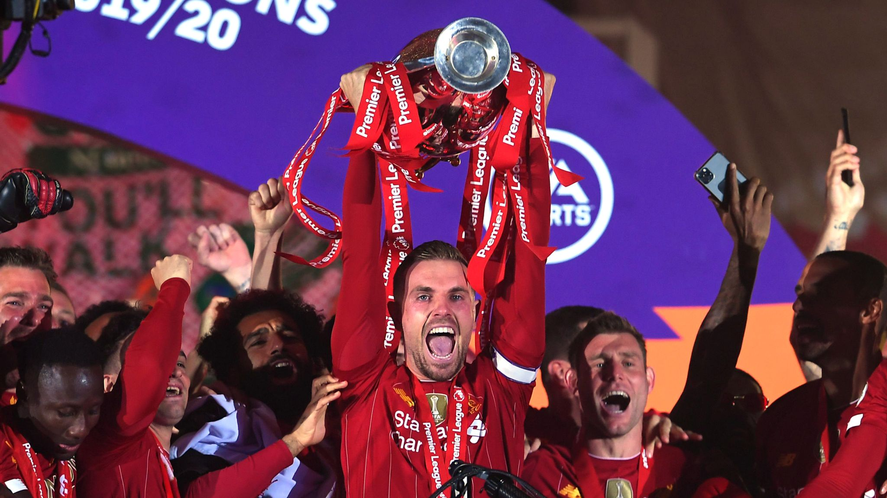

Premier League:
 A competition that has been dominated by Manchester City in recent years, with them winning the Premier League title in the last four years, Liverpool currently sit at the top of table with a 7 point gap between them and second place Chelsea. On top of this, due to adverse weather conditions postponing their most recent game, Liverpool have a game in hand, meaning that if they win their next game, they will have a 10 point lead.